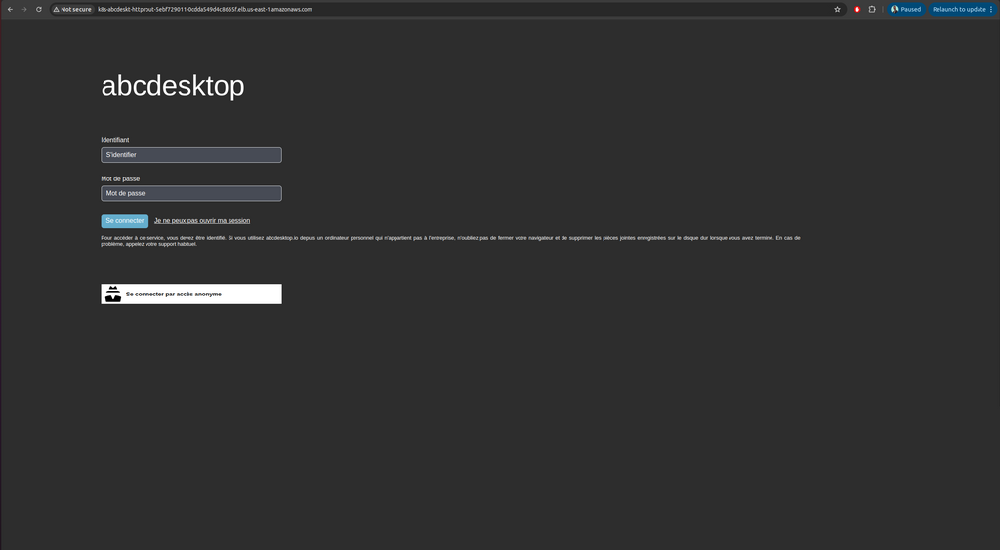
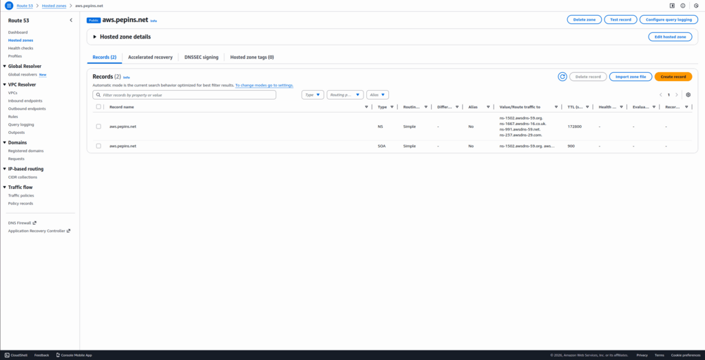
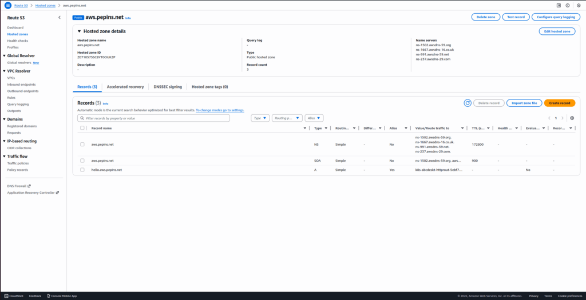
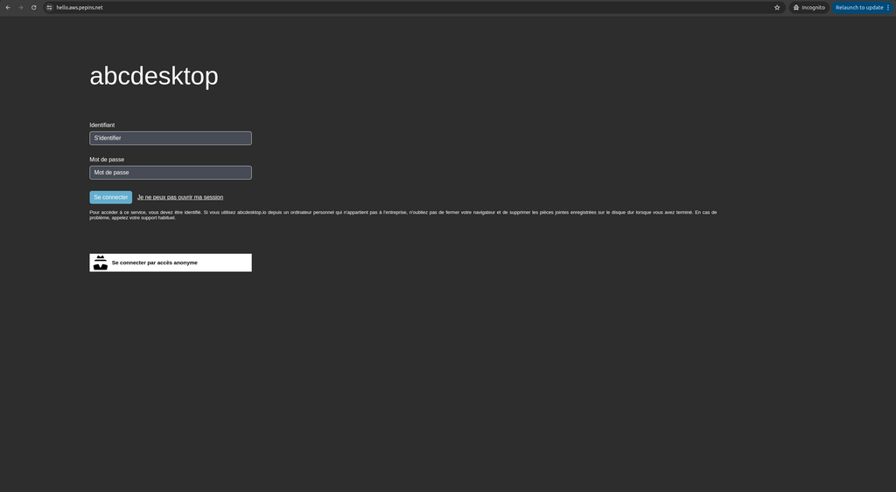
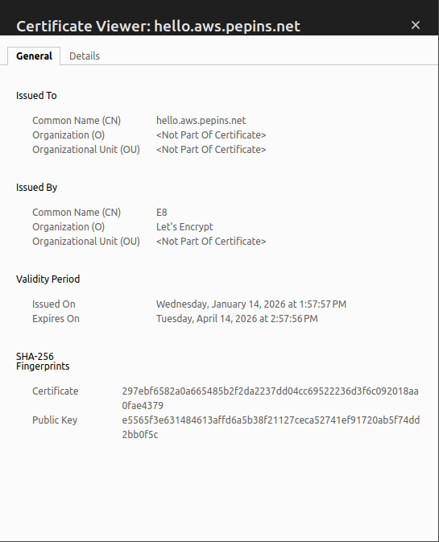

Publish your website as a public secured service
Requirements
- read the previous chapter Deploy abcdesktop on AWS with Amazon Elastic Kubernetes Service
- an AWS account
- your own internet domain
awscommand line interface aws-clikubectlcommand linewgetcommand line
Overview
In this chapter we are going to, use a loadBalancer to host your abcdesktop service with a public IP Address, then configure dns zone file to use your domain name, and activate TLS to secure your service.
Add tags for public subnets
By default, when creating your VPC, the public subnets does not have the kubernetes.io/role/elb=1 tag, but this tag is mandatory in order to expose our service using a load balancer with AWS. Actually, AWS scans your VPC, searching for the subnets with this percise tag to place the load balancers.
To do so, run the following command
aws ec2 create-tags --resources <your_public_subnets_ids> --tags Key=kubernetes.io/role/elb,Value=1
You can find your public subnets ids in the
Subnetspage of the VPC dashboard on AWS console
You can check if the tags have been applied by running the following command
aws ec2 describe-subnets --filters "Name=vpc-id,Values=<your_vpc_id>" "Name=tag:kubernetes.io/role/elb,Values=1" --query 'Subnets[*].[SubnetId,AvailabilityZone]' --output table
You should read on stdout
--------------------------------------------
| DescribeSubnets |
+---------------------------+--------------+
| subnet-09c09bd5bbdec72a6 | us-east-1b |
| subnet-02d592feab5bb0faf | us-east-1a |
+---------------------------+--------------+
Create a new http-router service yaml file
The default install define the http-router service with as nodePort type. We are going to update the http-router service with a LoadBalancer type.
Create a file named http-router.yaml
apiVersion: v1
kind: Service
metadata:
name: http-router
labels:
abcdesktop/role: router-od
annotations:
service.beta.kubernetes.io/aws-load-balancer-type: "nlb-ip"
service.beta.kubernetes.io/aws-load-balancer-scheme: "internet-facing"
service.beta.kubernetes.io/aws-load-balancer-healthcheck-protocol: "http"
service.beta.kubernetes.io/aws-load-balancer-healthcheck-port: "80"
service.beta.kubernetes.io/aws-load-balancer-healthcheck-path: "/healthz"
spec:
type: LoadBalancer
selector:
run: router-od
ports:
- name: https
protocol: TCP
port: 443
targetPort: 443
- name: http
protocol: TCP
port: 80
targetPort: 80
Save your http-router.yaml file
Delete the previous service http-router
kubectl delete service http-router -n abcdesktop
service "http-router" deleted
Create your new service/http-router
kubectl apply -f http-router.yaml -n abcdesktop
service/http-router created
Wait for few minutes, the EXTERNAL-IP of service http-router stays in Pending state
kubectl get services http-router -n abcdesktop
NAME TYPE CLUSTER-IP EXTERNAL-IP PORT(S) AGE
http-router LoadBalancer 172.20.207.4 <pending> 80:32155/TCP 3s
Check the EXTERNAL-IP of service http-router again
kubectl get services http-router -n abcdesktop
Great the service gets
k8s-abcdeskt-httprout-5ebf729011-0cdda549d4c8665f.elb.us-east-1.amazonaws.comas anEXTERNAL-IP
NAME TYPE CLUSTER-IP EXTERNAL-IP PORT(S) AGE
http-router LoadBalancer 172.20.207.4 k8s-abcdeskt-httprout-5ebf729011-0cdda549d4c8665f.elb.us-east-1.amazonaws.com 443:32461/TCP,80:31216/TCP 2m3d
You can open a web browser to reach your abcdesktop service with the given URL

Web browser doesn't allow usage of websocket without secure protocol. To login you need https protocol
Update your DNS zone file
We will use a FQDN (Fully Qualified Domain Name) to replace the IP Address.

This screenshot describes the AWS network console Route 53. It shows the Domain informations, but your can manage your zone file from your own registrar.
Create new record
We are going to create a new record hello (hello.aws.pepins.net) using k8s-abcdeskt-httprout-5ebf729011-0cdda549d4c8665f.elb.us-east-1.amazonaws.com as an alias.
First, you will need your load balancer hosted zone id. To get, run the following command :
aws elbv2 describe-load-balancers --region us-east-1 --query 'LoadBalancers[0].CanonicalHostedZoneId'
You should get something like this
Z26RNL4JYFTOTI
Now paste the following lines in a create-record-abcdesktop-aws.json file :
{
"Comment": "create a new record for abcdesktop on aws",
"Changes": [
{
"Action": "CREATE",
"ResourceRecordSet": {
"Name": "hello.aws.pepins.net.",
"Type": "A",
"AliasTarget": {
"HostedZoneId": "<your_hosted_zone_id>",
"DNSName": "k8s-abcdeskt-httprout-5ebf729011-0cdda549d4c8665f.elb.us-east-1.amazonaws.com",
"EvaluateTargetHealth": false
}
}
}
]
}
Now, you will need to retrieve the hosted zone id of your domain on route 53. You can get it through the Route 53 web interface, or by running the following command :
aws route53 list-hosted-zones --query 'HostedZones[*].[Name,Id]' --output table
You should read something like this
--------------------------------------------------------
| ListHostedZones |
+------------------+-----------------------------------+
| aws.pepins.net. | /hostedzone/Z0710575SCBYT0OUKZP |
+------------------+-----------------------------------+
Finally, run this command to add the record :
aws route53 change-resource-record-sets --hosted-zone-id <your_domain_hosted_zone_id> --change-batch file://create-record-abcdesktop-aws.json
For example
aws route53 change-resource-record-sets --hosted-zone-id Z0710575SCBYT0OUKZP --change-batch file://create-record-abcdesktop-aws.json
You should read something like this
{
"ChangeInfo": {
"Id": "/change/C07091422RBO1K64I6QWN",
"Status": "PENDING",
"SubmittedAt": "2026-01-14T13:30:30.133000+00:00",
"Comment": "create a new record for abcdesktop on aws"
}
}
If you go to your Route 53 web console, you should see the record you juste added

From your local device, you can open a web browser
Web browser doesn't allow usage of websocket without secure protocol. To login you need https protocol.
As you can see, your website is Not Secured, we are going to add X509 SSL certificate to secure your service.
Obtain a certificat
If you already have a X509 certificat with a private and public certified key files for your web site, you can skip this chapter.
To create you SSL certificat, we are using let's encrypt service. You need your new hostname and your email address
Define the new variables ABCDESKTOP_PUBLIC_FQDN and USER_EMAIL_ADDRESS
ABCDESKTOP_PUBLIC_FQDN=hello.aws.pepins.net
USER_EMAIL_ADDRESS=thisisyouremail@domain.com
ROUTER_POD_NAME=$(kubectl get pods -l run=router-od -o jsonpath={.items..metadata.name} -n abcdesktop)
kubectl exec -n abcdesktop -it ${ROUTER_POD_NAME} -- /usr/bin/certbot certonly --webroot -w /var/lib/nginx/html -d ${ABCDESKTOP_PUBLIC_FQDN} -m "${USER_EMAIL_ADDRESS}" --agree-tos -n
You should read on stdout
Saving debug log to /var/log/letsencrypt/letsencrypt.log
Account registered.
Requesting a certificate for hello.aws.pepins.net
Successfully received certificate.
Certificate is saved at: /etc/letsencrypt/live/hello.aws.pepins.net/fullchain.pem
Key is saved at: /etc/letsencrypt/live/hello.aws.pepins.net/privkey.pem
This certificate expires on 2026-04-13.
These files will be updated when the certificate renews.
NEXT STEPS:
- The certificate will need to be renewed before it expires. Certbot can automatically renew the certificate in the background, but you may need to take steps to enable that functionality. See https://certbot.org/renewal-setup for instructions.
- - - - - - - - - - - - - - - - - - - - - - - - - - - - - - - - - - - - - - - -
If you like Certbot, please consider supporting our work by:
* Donating to ISRG / Let's Encrypt: https://letsencrypt.org/donate
* Donating to EFF: https://eff.org/donate-le
- - - - - - - - - - - - - - - - - - - - - - - - - - - - - - - - - - - - - - - -
The files fullchain.pem and privkey.pem are located inside the container.
Certificate is saved at: /etc/letsencrypt/live/hello.aws.pepins.net/fullchain.pem
Key is saved at: /etc/letsencrypt/live/hello.aws.pepins.net/privkey.pem
We export the files and create a new secrets.
kubectl exec -n abcdesktop -it ${ROUTER_POD_NAME} -- cat /etc/letsencrypt/live/$ABCDESKTOP_PUBLIC_FQDN/fullchain.pem > fullchain.pem
kubectl exec -n abcdesktop -it ${ROUTER_POD_NAME} -- cat /etc/letsencrypt/live/$ABCDESKTOP_PUBLIC_FQDN/privkey.pem > privkey.pem
Create a secret for X509 certificat
Create a secret named http-router-certificat with the fullchain.pem and privkey.pem file content
kubectl create secret tls http-router-certificat --cert=fullchain.pem --key=privkey.pem -n abcdesktop
You secret is created
secret/http-router-certificat created
Update http-router ConfigMap to use the new http-router-certificat secret
Download abcdesktop-routehttp-config.4.4.yaml file
wget https://raw.githubusercontent.com/abcdesktopio/conf/refs/heads/main/kubernetes/abcdesktop-routehttp-config.4.4.yaml
Open your abcdesktop-routehttp-config.4.4.yaml file, look for the ConfigMap abcdesktop-routehttp-config.
Remove the comments to enable https and change the value YOUR_SERVER_NAME_AND_DOMAIN by your own value.
# nginx server config
server {
...
######
# uncomment this to enable https
#
listen 443 ssl http2 default_server;
listen [::]:443 ssl http2 default_server;
server_name YOUR_SERVER_NAME_AND_DOMAIN; # change this too
ssl_certificate /etc/nginx/ssl/tls.crt;
ssl_certificate_key /etc/nginx/ssl/tls.key;
#
# end of https section
######
...
index index.html index.htm;
For example
listen 443 ssl http2 default_server;
listen [::]:443 ssl http2 default_server;
server_name hello.aws.pepins.net;
ssl_certificate /etc/nginx/ssl/tls.crt;
ssl_certificate_key /etc/nginx/ssl/tls.key;
Apply your new nginx confguration file
kubectl apply -f abcdesktop-routehttp-config.4.4.yaml -n abcdesktop
Update deployment http-router
Update the deployment route to add certificat ssl entry
The abcdesktop-deployment-routehttps.4.4.yaml file adds mountPath: /etc/nginx/ssl to secretName: http-router-certificat
kubectl apply -f https://raw.githubusercontent.com/abcdesktopio/conf/refs/heads/main/kubernetes/abcdesktop-deployment-routehttps.4.4.yaml -n abcdesktop
Reach your website using https protocol
You can now connect to your abcdesktop desktop pulic web site using https protocol.

The status is secured and we get some informations from the certificate
